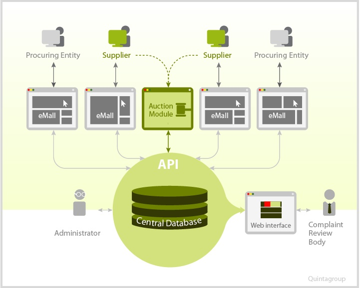

OpenProcurement is an open source e-procurement toolkit.
OpenProcurement's goal is to provide the tools to design and build a procurement process that is transparent and competative. The toolkit builds accessible processes that leverage auctions to drive savings and are backed by strong data collection and reporting. It is designed to be automated and scalable. Accessibility, transparency of tendering process, electronic documents, detailed reporting - these are only a few benefits of using this e-Procurement software.
OpenProcurement’s initial application was with ProZorro, a procurement system implemented to support multiple national government agencies in Ukraine. OpenProcurement is flexible enough to handle all shapes and sizes of government and private sector procurements.
The basic toolkit, which covers storing data and reverse auctions, is free. The toolkit's Data Standard was developed on the basis of Open Contracting 1.0RC. These data standards were extended to ensure practical implementation of the procurement process in the Prozorro system.
The technical specifications of OpenProcurement are intended to provide a functional solution that will be flexible enough to work with different standards and varied applications. The toolkit was developed with Python, Pyramid, Angular and other powerful open source web technologies to ensure reliable functionality and secure workflow.
OpenProcurement consists of a Central database (CDB) and an API via which specialized eMalls can interact with CDB. eMalls are web platforms that implement e-Procurement system features and provide access for procuring entities, suppliers and regular visitors. eMalls interact with the CDB via OpenProcurement API and provide suppliers with temporary credentials to access the Auction module for participation in the auction.
Once a procurement is announced and bid proposals are registered, users get access to the 3-round auction. Reverse auctions enable competitive bidding environment, while the 3-round design ensures auctions are not overly long to discourage participation.

Prozorro is an application of the OpenProcurement toolkit to design and implement a scalable, dynamic software system for electronic public procurement. Prozorro provides a platform for transparent and efficient spending of public funds and aims to prevent corruption through public oversight and enhanced competition.
Prozorro coordinates the work of Open Procurement toolkit and local eMalls. Six e-Malls are already providing access to the system: Newtend, PublicBid, NetCast, Prom.ua, e-tender.biz, and smarttender.biz. What is more important, the project is open, so any eMall can join if it offers the necessary functionality.
Prozorro also provides cross-access to the system. Users can see all procurements via their eMalls and suppliers can register their bid proposals to any procurement regardless of where the proposal was first announced. This approach creates real competition among suppliers that will lead to savings, as well as keeping the market of eMalls competitive.
The procuring entities that use Prozorro include the Ministry of Infrastructure, Ministry of Defence, Ministry of Justice, Ministry of Economy, State Management of Affairs, Ministry of Ecology, and many others. We have received positive feedback from our users, namely:
Memorandum of initiative people and companies interested in building a transparent and effective system of public procurement in Ukraine
Projects with components related to Open Procurement system (presentation):